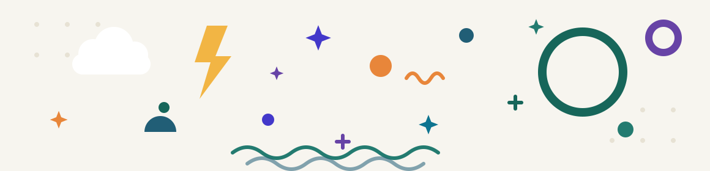

Useful little tools,
for everyday work.
Have a question, idea, or spotted a bug?
Apps & Guides
Quick Answers & Trust
How does Kevin Labs handle my data and privacy?
100% Local-First. All our macOS apps (VolMix, KSIC Studio, NetDoctor, etc.) run inside secure local sandboxes and process data strictly on your Mac. We do not track, collect, or upload your personal files or browsing data to any remote servers.
How do I restore my purchase on a new or second Mac?
Mac App Store purchases are tied to your Apple Account. Sign in with the same Apple ID on your Mac, open the app, and click Restore Purchases. You will never be charged twice for authorized devices under your account.
Why does VolMix request audio capture permissions?
macOS requires explicit user authorization to detect individual running audio streams. VolMix uses this permission exclusively to adjust per-app volume and mute levels. You can manage this at any time in System Settings → Privacy & Security.
Will these apps continue to support future macOS versions?
Yes. As an independent studio, Kevin Labs actively tests and adapts every app against developer betas for each major macOS release.
做点好用的小工具，
解决日常问题。
有任何使用疑问、功能建议或发现了 Bug？
全部应用与指南
常见问题与安心保障
Kevin Labs 是如何保障我的数据安全与隐私的？
100% 本地优先（Local-First）。 我们的 macOS 应用（VolMix、KSIC Studio、NetDoctor 等）完全运行在苹果系统的沙盒隔离环境中，所有操作与数据仅保留在您的 Mac 本地。我们不收集、不上报、不上传任何个人文件或浏览数据。
更换新 Mac 或在第二台 Mac 上如何恢复购买？
Mac App Store 的购买记录与您的 Apple 账户绑定。只需在新 Mac 上登录同一 Apple ID，打开 App 并点击恢复购买（Restore Purchases）即可，绝不会重复扣费。
为什么 VolMix 需要请求系统音频捕获权限？
macOS 严格限制后台进程探测声音，必须由用户显式授权。VolMix 仅使用该权限识别正在发声的应用程序以提供单独音量与静音调节。您可以随时在 系统设置 → 隐私与安全性 中进行管理。
应用会持续适配未来的 macOS 新系统吗？
当然。作为独立工坊，我们会在苹果每个开发者 Beta 阶段积极跟进测试，确保新系统发布时第一时间平滑可用。
あなたのアプリ。
ここから始めましょう。
ご質問、アイデア、バグのご報告はありませんか？
アプリとガイド
よくある質問
Kevin Labs は私のデータとプライバシーをどう扱いますか？
100% ローカルファースト。 当社の macOS アプリ（VolMix、KSIC Studio、NetDoctor など）はすべて安全なローカルサンドボックス内で動作し、データは Mac 上でのみ処理されます。個人ファイルやブラウジングデータを追跡・収集・リモートサーバーへアップロードすることはありません。
新しい Mac や2台目の Mac で購入を復元するには？
Mac App Store の購入は Apple アカウントに紐付いています。Mac で同じ Apple ID にサインインし、アプリを開いて「購入を復元」をクリックしてください。同一アカウントの認証済みデバイスで二重課金されることはありません。
VolMix がオーディオキャプチャの権限を要求するのはなぜですか？
macOS では、実行中のオーディオストリームを検出するためにユーザーの明示的な許可が必要です。VolMix はこの権限をアプリごとの音量調整とミュートのためだけに使用します。システム設定 → プライバシーとセキュリティでいつでも管理できます。
これらのアプリは将来の macOS バージョンにも対応しますか？
はい。独立系スタジオとして、Kevin Labs は各 macOS メジャーリリースのデベロッパベータ段階からすべてのアプリのテストと適合を行っています。
당신의 앱,
여기서 시작하세요.
질문, 아이디어, 또는 버그를 발견하셨나요?
앱 및 가이드
자주 묻는 질문
Kevin Labs는 내 데이터와 개인정보를 어떻게 처리하나요?
100% 로컬 우선(Local-First). 모든 macOS 앱(VolMix, KSIC Studio, NetDoctor 등)은 안전한 로컬 샌드박스 안에서 실행되며 데이터는 Mac에서만 처리합니다. 개인 파일이나 브라우징 데이터를 추적·수집하거나 원격 서버로 업로드하지 않습니다.
새 Mac이나 두 번째 Mac에서 구매를 복원하려면 어떻게 하나요?
Mac App Store 구매 내역은 Apple 계정에 연결되어 있습니다. Mac에서 같은 Apple ID로 로그인하고 앱을 연 뒤 구매 복원(Restore Purchases)을 클릭하세요. 계정에 승인된 기기에서 이중 청구되지 않습니다.
VolMix가 오디오 캡처 권한을 요청하는 이유는 무엇인가요?
macOS는 실행 중인 오디오 스트림을 감지하기 위해 사용자의 명시적 승인을 요구합니다. VolMix는 이 권한을 앱별 음량 및 음소거 조절에만 사용합니다. 시스템 설정 → 개인정보 보호 및 보안에서 언제든지 관리할 수 있습니다.
이 앱들은 앞으로의 macOS 버전도 계속 지원하나요?
네. 독립 스튜디오로서 Kevin Labs는 macOS 주요 버전의 개발자 베타 단계부터 모든 앱을 테스트하고 적용합니다.
Deine Apps.
Hier starten.
Frage, Idee oder einen Fehler gefunden?
Apps & Anleitungen
Häufige Fragen
Wie geht Kevin Labs mit meinen Daten und meiner Privatsphäre um?
100 % Local-First. Alle unsere macOS-Apps (VolMix, KSIC Studio, NetDoctor usw.) laufen in sicheren lokalen Sandboxes und verarbeiten Daten ausschließlich auf Ihrem Mac. Wir verfolgen, sammeln oder laden keine persönlichen Dateien oder Browserdaten auf entfernte Server hoch.
Wie stelle ich meinen Kauf auf einem neuen oder zweiten Mac wieder her?
Käufe im Mac App Store sind mit Ihrem Apple-Account verknüpft. Melden Sie sich auf Ihrem Mac mit derselben Apple-ID an, öffnen Sie die App und klicken Sie auf Käufe wiederherstellen. Autorisierte Geräte unter Ihrem Account werden nie doppelt belastet.
Warum benötigt VolMix die Berechtigung zur Audioaufnahme?
macOS verlangt eine ausdrückliche Nutzererlaubnis, um einzelne laufende Audiostreams zu erkennen. VolMix nutzt diese Berechtigung ausschließlich, um Lautstärke und Stummschaltung pro App anzupassen. Sie können dies jederzeit unter Systemeinstellungen → Datenschutz & Sicherheit verwalten.
Werden diese Apps auch zukünftige macOS-Versionen unterstützen?
Ja. Als unabhängiges Studio testet und adaptiert Kevin Labs jede App aktiv gegen die Entwickler-Betas jeder macOS-Hauptversion.
Vos applications.
Commencez ici.
Une question, une idée ou un bug à signaler ?
Apps et guides
Questions fréquentes
Comment Kevin Labs gère-t-il mes données et ma vie privée ?
100 % Local-First. Toutes nos apps macOS (VolMix, KSIC Studio, NetDoctor, etc.) fonctionnent dans des sandbox locales sécurisées et traitent les données uniquement sur votre Mac. Nous ne suivons, ne collectons ni ne téléversons vos fichiers personnels ou vos données de navigation vers des serveurs distants.
Comment restaurer mon achat sur un Mac neuf ou secondaire ?
Les achats du Mac App Store sont liés à votre compte Apple. Connectez-vous avec le même identifiant Apple sur votre Mac, ouvrez l'app et cliquez sur Restaurer les achats. Vous ne serez jamais facturé deux fois pour les appareils autorisés de votre compte.
Pourquoi VolMix demande-t-il l'autorisation de capture audio ?
macOS exige une autorisation explicite de l'utilisateur pour détecter les flux audio en cours. VolMix utilise cette permission exclusivement pour régler le volume et la mise en sourdine par app. Vous pouvez la gérer à tout moment dans Réglages Système → Confidentialité et sécurité.
Ces apps prendront-elles en charge les futures versions de macOS ?
Oui. En tant que studio indépendant, Kevin Labs teste et adapte activement chaque app sur les bêtas développeurs de chaque version majeure de macOS.
Tus aplicaciones.
Empieza aquí.
¿Tienes una pregunta, una idea o has encontrado un error?
Apps y guías
Preguntas frecuentes
¿Cómo gestiona Kevin Labs mis datos y mi privacidad?
100 % Local-First. Todas nuestras apps de macOS (VolMix, KSIC Studio, NetDoctor, etc.) se ejecutan en sandboxes locales seguras y procesan los datos únicamente en tu Mac. No rastreamos, recopilamos ni subimos tus archivos personales ni datos de navegación a servidores remotos.
¿Cómo restauro mi compra en un Mac nuevo o secundario?
Las compras de Mac App Store están vinculadas a tu cuenta de Apple. Inicia sesión con el mismo Apple ID en tu Mac, abre la app y pulsa Restaurar compras. Nunca se te cobrará dos veces en los dispositivos autorizados de tu cuenta.
¿Por qué VolMix solicita permisos de captura de audio?
macOS requiere autorización explícita del usuario para detectar los flujos de audio en ejecución. VolMix usa este permiso exclusivamente para ajustar el volumen y el silencio por app. Puedes gestionarlo en cualquier momento en Ajustes del Sistema → Privacidad y seguridad.
¿Estas apps seguirán siendo compatibles con futuras versiones de macOS?
Sí. Como estudio independiente, Kevin Labs prueba y adapta activamente cada app con las betas para desarrolladores de cada versión principal de macOS.
Seus aplicativos.
Comece aqui.
Tem uma pergunta, uma ideia ou encontrou um bug?
Apps e guias
Perguntas frequentes
Como o Kevin Labs trata meus dados e minha privacidade?
100% Local-First. Todos os nossos apps para macOS (VolMix, KSIC Studio, NetDoctor etc.) rodam em sandboxes locais seguras e processam os dados apenas no seu Mac. Não rastreamos, coletamos nem enviamos seus arquivos pessoais ou dados de navegação para servidores remotos.
Como restauro minha compra em um Mac novo ou secundário?
As compras da Mac App Store são vinculadas à sua conta Apple. Inicie sessão com o mesmo Apple ID no seu Mac, abra o app e clique em Restaurar compras. Você nunca será cobrado duas vezes nos dispositivos autorizados da sua conta.
Por que o VolMix solicita permissão de captura de áudio?
O macOS exige autorização explícita do usuário para detectar fluxos de áudio em execução. O VolMix usa essa permissão exclusivamente para ajustar o volume e o mudo por app. Você pode gerenciar isso a qualquer momento em Ajustes do Sistema → Privacidade e Segurança.
Esses apps continuarão compatíveis com futuras versões do macOS?
Sim. Como estúdio independente, o Kevin Labs testa e adapta ativamente cada app nas betas para desenvolvedores de cada versão principal do macOS.